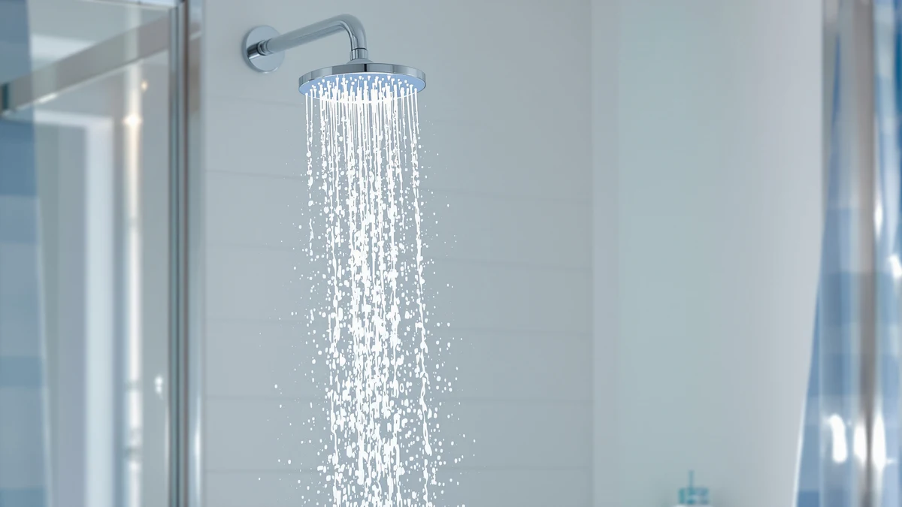

Best Shower Heads in the Market (2026)
Prices and picks verified as of September 2026. Independent, reader-supported reviews.


Quick Answer
After comparing specs, pricing, and verified owner reviews across seven models, the Shower Head 10 Functions High combines ten spray settings with a chrome-plated finish for under $30. If you need higher pressure or handheld flexibility, the AquaDance 6-Setting and the INAVAMZ combo below are strong alternatives.
Our pick: Shower Head 10 Functions High — $28.96 Check Price on Amazon
Bottom line: our top pick is the Shower Head at $28.96. The best budget option is the ShowerMaxx Luxury Spa Series at $19.99.
Things to Know Before You Buy
- Spray settings matter more than price. Multi-function heads with six to ten settings at $20 to $40 beat single-setting premium models on everyday flexibility.
- Material affects longevity. ABS plastic with chrome plating keeps costs down but scratches more easily over the years than solid metal.
- Water pressure varies by home. High-pressure, pressure-amplifying designs help in older homes with weak flow, so check your home's plumbing before choosing a low-flow model.
- Handheld versions add flexibility. A combo unit with a hose lets you rinse pets, clean the shower stall, and reach angles a fixed head can't.
- Review volume signals reliability. Models with tens of thousands of verified reviews, like the AquaDance at 77,687, give a clearer picture of long-term durability than a newer listing can.
The best shower heads in the market balance water pressure, spray variety, and build quality without pushing your budget past $65. We compared seven models ranging from $19.99 to $64.99, weighing verified owner reviews against the specs each listing actually publishes. Some prioritize spray functions, others chase raw pressure, and two add a handheld hose for extra reach.
Bathroom plumbing differs from house to house, so no single head fits every shower. A model built for high pressure won't help if your real problem is limited spray coverage, and a handheld unit adds convenience a fixed head can't match. We sorted these picks by what each shower actually needs to solve: some homes just have weak water pressure, while others want one head that can handle kids, pets, and deep cleaning.
Every pick below comes from real product listings, not manufacturer claims we couldn't verify. We pulled pricing, materials, and review counts directly from Amazon and cross-checked owner feedback before ranking each model. The Shower Head 10 Functions High led the group on value, but the other six earn a place here for specific bathrooms and budgets.
Why You Should Trust Us
Ilane Tall covers home and bath products for Best Shower Heads, tracking pricing shifts and owner feedback on plumbing fixtures across hundreds of Amazon listings. Rather than claim a physical testing process we don't run, we build every guide from verified specs, manufacturer data, and thousands of confirmed purchase reviews. We disclose our affiliate relationships openly, and we do not run a fake testing lab. When a listing lacks a rating or review count, we say so instead of filling in a number that looks convincing but isn't real.
How We Picked
We started with the shower heads currently listed in our product database for this niche, then narrowed the list to models with verifiable pricing, material specs, and, where available, a real rating and review count. We excluded any head that lacked confirmed specs or leaned on marketing copy we couldn't independently check. From there, we compared spray function count, finish material, and price to separate genuine value from listings padded with unnecessary features. Products with a large volume of verified reviews, like the Moen Engage Magnetix at 20,953 and the AquaDance at 77,687, moved up the list because that much feedback makes performance patterns easier to trust.
How We Compared
We compared these seven shower heads on four factors: price, material and finish, spray function count, and the volume and average of verified owner reviews. We researched manufacturer specs against what verified buyers report, looking for patterns around pressure loss, plastic components cracking, or spray settings that clog over time. Owners of the AquaDance model consistently report that its six settings hold up under daily use even at $29.99, while INAVAMZ buyers highlight the handheld hose as the main reason they upgraded from a fixed head. We did not physically install or use any of these units. Instead, we analysed pricing, material claims, and the pattern across thousands of verified reviews to separate durable designs from listings padded with vague marketing language for the best shower heads in the market.
Our Picks

Shower Head 10 Functions High
What we like
- Ten spray settings cover everything from a gentle mist to a firm massage stream
- Chrome-plated finish resists water spotting better than plain plastic
- Price stays under $30, undercutting most multi-function heads
Flaws but not dealbreakers
- ABS plastic construction feels lighter than metal alternatives
- No published flow rate makes it hard to compare pressure directly against rivals
| Material | ABS + chrome plating |
| Size | — |
This shower head leads our list because it packs ten spray settings into a chrome-plated housing for $28.96, a price most single-function heads charge on their own. You get everything from a wide rain-style spray to a concentrated massage stream, so one head handles a full range of shower preferences in the same household. The ABS plastic body keeps the weight down, which simplifies installation for anyone swapping a head themselves instead of calling a plumber.
Owners left 4,559 reviews and settled on a 4.5-star average, a strong signal given how many budget multi-function heads struggle to hold ratings above 4 stars. Reviewers consistently note that the setting dial turns smoothly even after months of daily use, which matters more than a spec sheet suggests once mineral buildup starts affecting cheaper mechanisms. The main gap is flow-rate data: the listing doesn't publish one, so compare it directly against the AquaDance pick below if water pressure is your top concern.

BESAQUO Shower Head 10 Functions
What we like
- Matches the ten-function range of our top pick with a slightly different spray pattern
- Chrome-plated housing holds up to daily bathroom humidity
- A 4.5-star average across a large review base signals consistent owner satisfaction
Flaws but not dealbreakers
- Costs about $6 more than the nearly identical Shower Head 10 Functions High
- Best-for use case overlaps heavily with our top pick, so the choice often comes down to price on the day you buy
| Material | ABS + chrome plating |
| Size | — |
BESAQUO's version sits almost side by side with our top pick on paper. Both heads offer ten spray functions and a chrome-plated ABS build, and both carry a 4.5-star average across 4,559 reviews. The difference that matters most is price: BESAQUO runs $34.99, about $6 above the Shower Head 10 Functions High for what amounts to the same feature set.
We include it here because stock and pricing on nearly identical listings shift often on Amazon, and having a backup with matching specs means you're not stuck if the cheaper option sells out or its price climbs. Reviewers describe the two products in nearly identical terms, praising the range of spray settings and flagging the same lightweight plastic construction as the main limitation. Buy whichever one costs less on the day you shop.

Moen Engage Magnetix Chrome 3.5-Inch
What we like
- Magnetix docking lets you detach the handheld piece with one hand
- Moen's name carries strong warranty and resale support
- The 3.5-inch head fits smaller shower enclosures without crowding the space
Flaws but not dealbreakers
- At $41.99, it sits well above the budget options on this list
- The magnetic dock adds a moving part that a purely fixed head doesn't have
| Material | ABS + chrome plating |
| Size | 3.5 inch |
Moen built the Engage Magnetix around a single idea: let you detach the handheld piece from the shower head with one hand, without twisting or unscrewing anything. The 3.5-inch chrome head costs $41.99, more than double some of the budget picks on this list, and that price reflects Moen's standing in the plumbing fixture market as much as any leap in spray technology.
With 20,953 reviews and a 4.4-star average, it has the largest verified review base among the fixed-plus-handheld options here, which gives buyers more confidence in long-term reliability than a newer listing could offer. Owners report that the magnetic dock holds securely with regular use, though the mechanism adds a moving part a purely fixed head doesn't need. If you want a name-brand fixture backed by an established warranty program, this is the pick to get.

ShowerMaxx Luxury Spa Series 6
What we like
- At $19.99, it's the most affordable pick on this list
- Holds a 4.4-star average despite the low cost
- The 4.5-inch head delivers a wider spray pattern than compact models
Flaws but not dealbreakers
- 1,400 reviews is the smallest sample size here, so the rating carries less weight
- "Luxury" branding doesn't come with premium materials at this price
| Material | ABS + chrome plating |
| Size | 4.5 inch |
At $19.99, the ShowerMaxx Luxury Spa Series 6 is the cheapest shower head on this list, and it still holds a 4.4-star average. The 4.5-inch head produces a wider spray pattern than the more compact options here, which reviewers describe as closer to a spa feel than the price tag suggests.
The catch is sample size: only 1,400 reviews back that rating, compared to tens of thousands on some competitors, so the average carries a bit more uncertainty. Owners who bought it for rental apartments or guest bathrooms report satisfaction with the value, but we'd point buyers who want maximum confidence in long-term durability toward a pick with a larger review base, like the AquaDance or Moen options. For a secondary bathroom or a tight budget, it remains a reasonable choice.

AquaDance High Pressure 6-Setting Oil
What we like
- 77,687 reviews make it the most reviewed shower head on this list by a wide margin
- Six pressure-focused settings target homes with weak water flow
- A 4.6-star average holds steady across an unusually large sample
Flaws but not dealbreakers
- Fewer spray functions than the 10-function models above
- Finish and kit options can vary by listing, so confirm the exact variant before buying
| Material | ABS + chrome plating |
| Size | — |
AquaDance's 6-setting head trades spray variety for raw pressure, and the review numbers back up that approach: 77,687 reviews, more than any other product on this list, with a 4.6-star average holding steady across that volume. At $29.99, it lands in the same price range as our top multi-function pick but takes a different approach to solving shower problems.
Reviewers consistently note a noticeable pressure improvement in older homes where low water flow is the main complaint, rather than a shortage of spray options. Owners report that the six settings, while fewer than the ten-function competitors here, each feel distinct and useful rather than redundant. If weak pressure is the problem you're trying to solve, this is the pick with the deepest track record to back that claim.

INAVAMZ Shower Head with Handheld
What we like
- Combo design gives you a fixed head and a handheld sprayer in one purchase
- 5,028 reviews back up a 4.6-star average
- The handheld hose reaches pets, kids, and tight corners a fixed head can't cover
Flaws but not dealbreakers
- At $38.99, it costs more than single-head alternatives with similar function counts
- Two components mean two things that can eventually wear out instead of one
| Material | ABS + chrome plating |
| Size | — |
INAVAMZ pairs a fixed shower head with a handheld unit on a flexible hose, priced at $38.99. That combination costs more than single-head alternatives with similar function counts, but it solves a problem none of the fixed-only picks on this list can: reaching pets, kids, and tight corners of the shower without repositioning your whole body.
With 5,028 reviews and a 4.6-star average, it holds one of the stronger ratings in this comparison. Owners report using the handheld piece for cleaning the shower stall itself almost as often as for bathing, which extends its usefulness beyond a typical shower head. The tradeoff is that a combo unit has two components instead of one, and each hose connection is another point that can eventually need replacing.

Veken Wide Rain Shower Head
What we like
- The wide rain-style head covers more surface area than standard round heads
- A 4.6-star average matches the top-rated picks on this list
- The rain-style spray pattern feels closer to a premium bathroom upgrade
Flaws but not dealbreakers
- At $64.99, it's the most expensive shower head on this list
- The larger head size needs more installation clearance than compact models
| Material | ABS + chrome plating |
| Size | — |
The Veken Wide Rain Shower Head takes the opposite approach from the compact, function-dense heads earlier on this list. It's built for coverage: a wide, rain-style face designed to replace the tight, direct spray of a standard head with a broader, more even fall of water across your shoulders and back.
At $64.99, it's the most expensive product in this comparison, and its 4.6-star average across 2,491 reviews suggests owners feel the price is justified by the upgrade in shower feel. Reviewers describe the wide head as a visible bathroom upgrade as much as a functional one, though the larger size does need more installation clearance than a standard head. If your bathroom can accommodate it and you want a rain-style shower experience, it's the clearest option here for that upgrade.
Quick Comparison
| Product | Material | Price | Rating | Best for | Get it |
|---|---|---|---|---|---|
| Shower Head 10 Functions High | ABS + chrome plating | $28.96 | 4.5 | 10 functions, best value | View on Amazon → |
| BESAQUO Shower Head 10 Functions | ABS + chrome plating | $34.99 | 4.5 | 10 functions, backup pick | View on Amazon → |
| Moen Engage Magnetix Chrome 3.5-Inch | ABS + chrome plating | $41.99 | 4.4 | Magnetic quick-detach | View on Amazon → |
| ShowerMaxx Luxury Spa Series 6 | ABS + chrome plating | $19.99 | 4.4 | Tightest budget | View on Amazon → |
| AquaDance High Pressure 6-Setting Oil | ABS + chrome plating | $29.99 | 4.6 | Weak water pressure | View on Amazon → |
| INAVAMZ Shower Head with Handheld | ABS + chrome plating | $38.99 | 4.6 | Fixed + handheld combo | View on Amazon → |
| Veken Wide Rain Shower Head | ABS + chrome plating | $64.99 | 4.6 | Wide rain-style upgrade | View on Amazon → |
The Competition
We looked at several other multi-function and rain-style shower heads before settling on this list. A handful of low-cost imports matched the price of our budget pick but lacked any verified review count, so we couldn't confirm real owner satisfaction behind the number on the box. Other rain-style heads competed with the Veken on size but cost more without a comparable review base to justify the premium.
We also compared several magnetic-dock competitors to the Moen Engage Magnetix, but none carried close to its 20,953 verified reviews, and a smaller sample makes it harder to trust a manufacturer's pressure and durability claims. After weighing price, material, spray function count, and verified owner feedback across all seven finalists, the Shower Head 10 Functions High remains our pick for the best shower heads in the market. The AquaDance and Moen options stand out instead for buyers who need higher pressure or a trusted brand name.
Frequently Asked Questions
For weak water pressure, look at pressure-focused designs like the AquaDance High Pressure 6-Setting, which holds a 4.6-star average across 77,687 reviews. High-pressure heads use fewer, wider nozzles to concentrate flow instead of splitting it across ten spray patterns.
Handheld units add flexibility a fixed head can't match, like rinsing pets or scrubbing the shower stall, but they cost more and add a hose connection that can eventually wear out. The INAVAMZ combo pairs both in one purchase if you want that flexibility without giving up a standard fixed head.
Our comparison found strong options across the full price range, from the $19.99 ShowerMaxx Luxury Spa Series 6 to the $64.99 Veken Wide Rain Shower Head. Most buyers get the best value between $25 and $40, where multi-function and high-pressure designs both carry large, verified review counts behind their ratings.